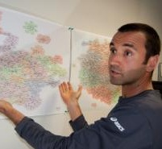

People behind the system

Stephen Kobourov
Stephen Kobourov
Stephen Kobourov is a Professor of Computer Science at the University of Arizona.
He works on graph drawing and information visualization, geometric algorithms and data
structures, human computer interaction, and pervasive computing.
Sergey Pupyrev is a post-doc at the University of Arizona.
He works on graph drawing and graph algorithms.
Jiankun Lu is an undergraduate student at the University of Arizona,
major in Computer Science.

Jixian Li
Jixian Li is an undergraduate student at the University of Arizona,
major in Computer Science.